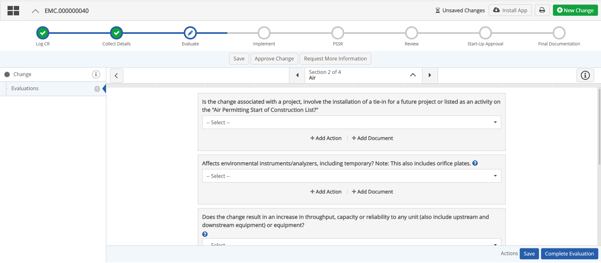
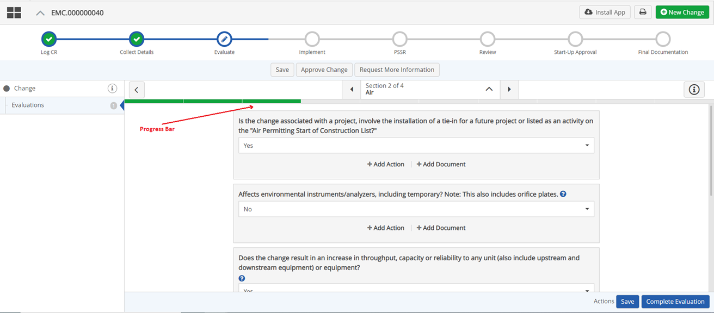
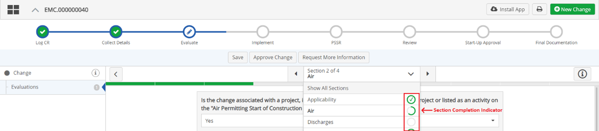
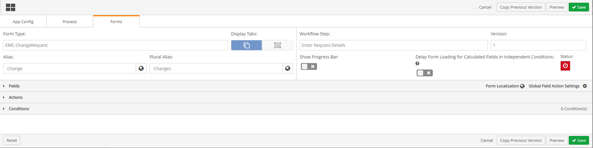
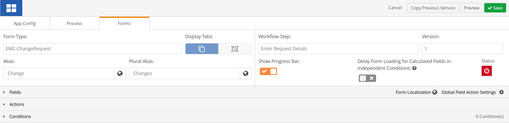

When completing a long form, the Progress Bar allows users to know how much a specific section of a form has been completed, and the Section Completion Indicator provides users an overview of how much each section of form has been completed.

The Progress Bar updates every time a form field in a section is completed.

The Section Completion Indicator updates every time a form field in a section is completed. 
These indications allow users to know their progress with the form, and the remaining work left to be completed.
To add a Progress Bar and Section Completion Indicators:

